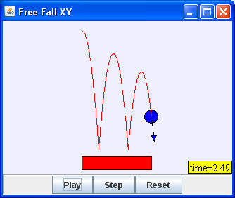

Free Fall Cartesian extends the Free Fall model of a ball bouncing on a table top to include motion in the x (horizontal) direction. The model includes a trace that shows the ball's trajectory as well as a more sophisticated collision algorithm that takes into account the finite width of the table top. Newton's second law F = ma is a vector equation and it must be satisfied in both the horizontal and vertical direction.
Fx = max
Fy = may .
Because the force in the x (horizontal) direction is zero, the associated acceleration ax is also zero and the velocity vx is constant. As in the Free Fall model, an impulsive normal force acting perpendicular to the table top reverses the ball's velocity upon collision. The table top corner is treated as a special case. The impulsive force from a corner collision is applied along a line from the corner toward the ball center.
The Free Fall in Cartesian Coordinates model is designed to teach Ejs modeling. Right click within the simulation to examine this model in the Ejs modeling and authoring tool. See:
The Easy Java Simulations (EJS) documentation can be downloaded from the ComPADRE Open Source Physics collection and from the Ejs website.
This simulation was created by Wolfgang Christian using the Easy Java Simulations (Ejs) modeling tool. You can examine and modify this simulation if you have Ejs installed by right-clicking within a plot and selecting "Open Ejs Model" from the pop-up menu. Information about Ejs is available at: <http://www.um.es/fem/Ejs/>.